Face Morphing
Vanessa Lin
Overview
In this project, I implementing a warping algorithm and played around with an image of myself with images of other people, like Park Seo Joon and the Danes dataset. Later on, in this project, I also computed the mean face of a population and created caricatures of myself. Enjoy the morphs that I created below! (Some of them were very amusing to me ...)Defining Correspondences
Before I defined the points of correspondence on the image of me and the image of Park Seo Joon, I first aligned the images together based on our eyes, so that the morph would be much smoother and our faces will be directly overlayed on top of each other. I built a function withginput to allow me to define 35 points over an image, and I labeled the two images in a consistent order, starting from the eyebrows to the eyes to the nose to the mouth to the outline of the chin and then to the four corners. After defining the point correspondences, I ran scipy.spatial's Delaunay triangulation function to compute the triangulations. Below are the resulting triangulations on myself and Park Seo Joon.
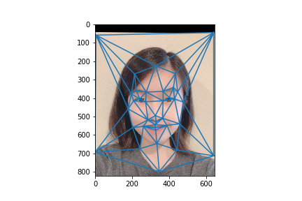
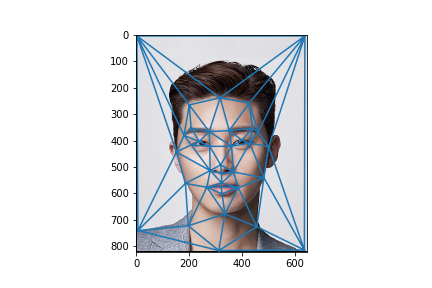
Midpoint Face
To build the midpoint face, I needed to find the average points between my face and Park Seo Joon's face and warp our faces to the average shape. I created awarp_image_to function to warp an image to a certain shape, in this case the average points. The function is passed in the image, image points of correspondence, average points of correspondence, and triangulation indices. First, I find the affine transformation matrices of the image shape triangles to the average shape triangles. The affine transformation matrix of one triangle to another involved finding the inverse of the dot product between the target triangle and the inverse of the source triangle. Afterwards, I iterated through each triangle in the triangulation to apply the affine transformation and interpolated using RectBivariateSpline. At the end, I cross-dissolved, which in this case was just averaging the two images colors together.
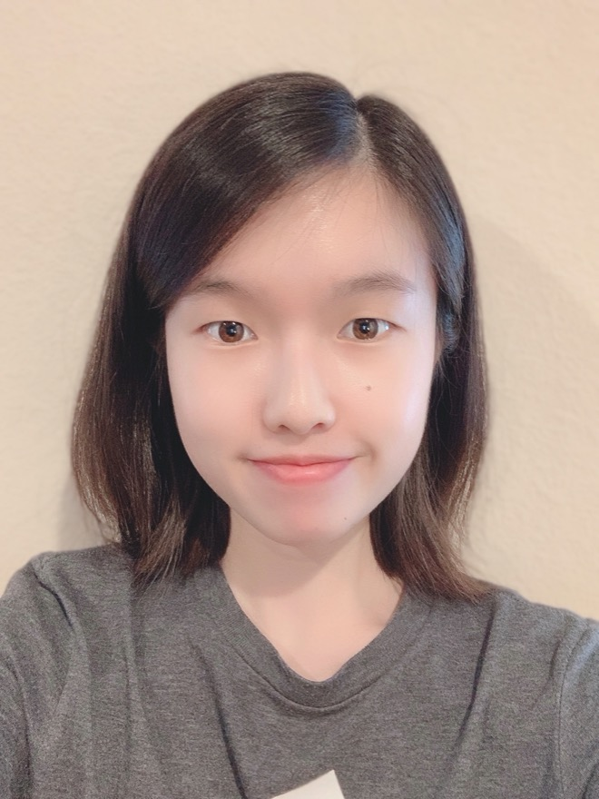
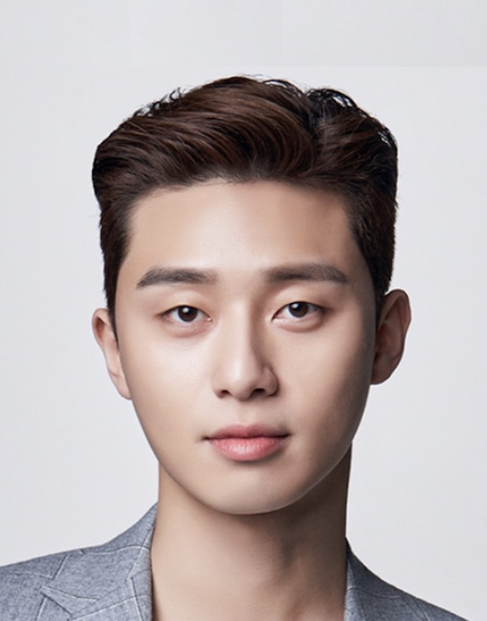
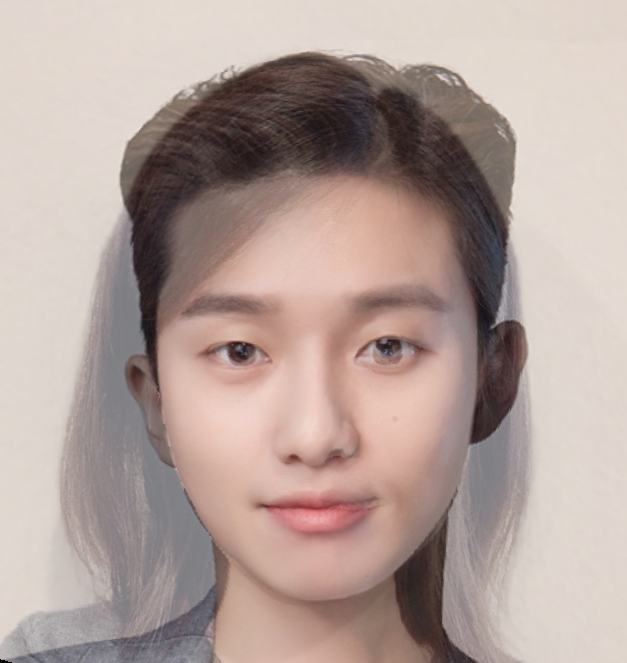
The Morph Sequence
For the morph sequence, I just wrote afor loop in a range of 0 to 50 and scaled the "average shape" and cross-dissolve based on weights alpha and 1 - alpha, such that "average shape" = alpha(point in starting image) + 1 - alpha (point in target image) and similarly for cross-dissolve but with pixels. I calculated 51 images from the starting image to the target image. The for loop can be modified to 45 midway images to produce a 45 frames of animation video.
Mean Face of Population
I chose the Danish computer scientists data set to find the mean face of a population. Using the annotated points from the dataset, I calculated the average shape (or the mid-shape) of the Danish scientists. Afterwards I warped each Danish scientist to the average shape of the Danish scientist population and then I computed the average of all the warped Danish scientists to obtain the mean face below.
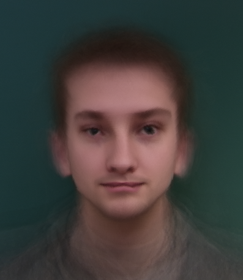
Here are some more images of individual Danish computer scientists warped to the average Danish computer scientist shape.
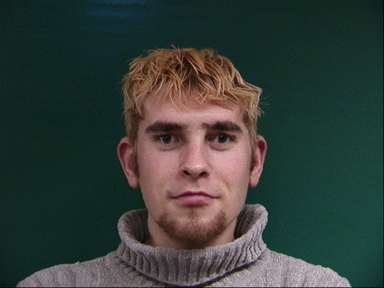
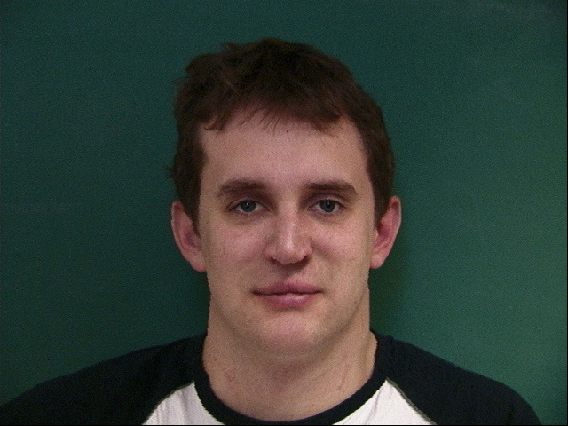
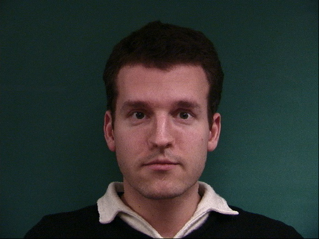
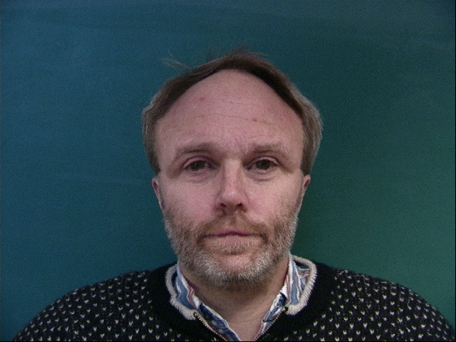
Caricatures
To produce caricature versions of me, I extrapolated from the population mean through finding the difference between me and the mean face of the Danish population, and then adding the difference by a factor,alpha. From the images below, we can see that with a positive alpha, my features of a sharper chin, smaller face, and longer distance between the middle of my eyes and the tip of my nose was emphasized through the first row of caricatures. With a negative alpha, we can see that the images try to emphasize more of the mean face features with larger eyes (albeit weirdly shaped) and fuller lips with a cupid's bow in the caricatures on the second row.
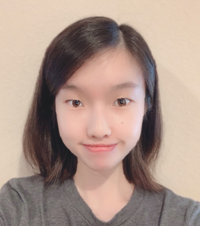

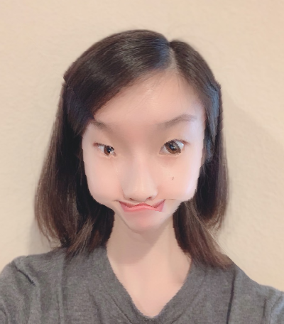
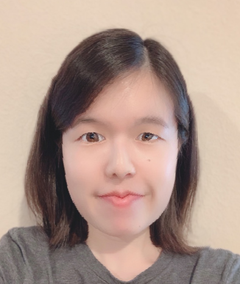

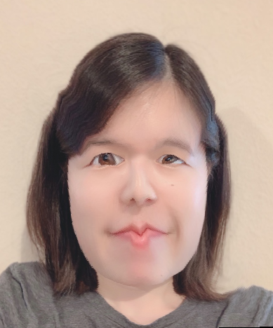